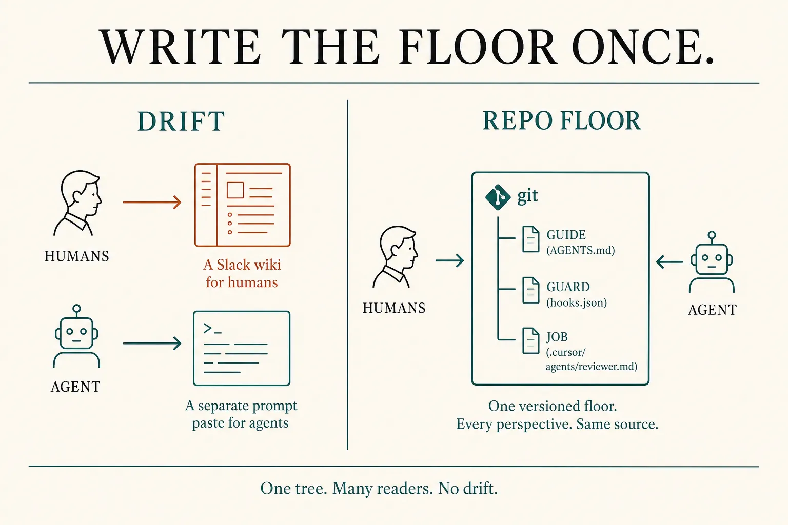
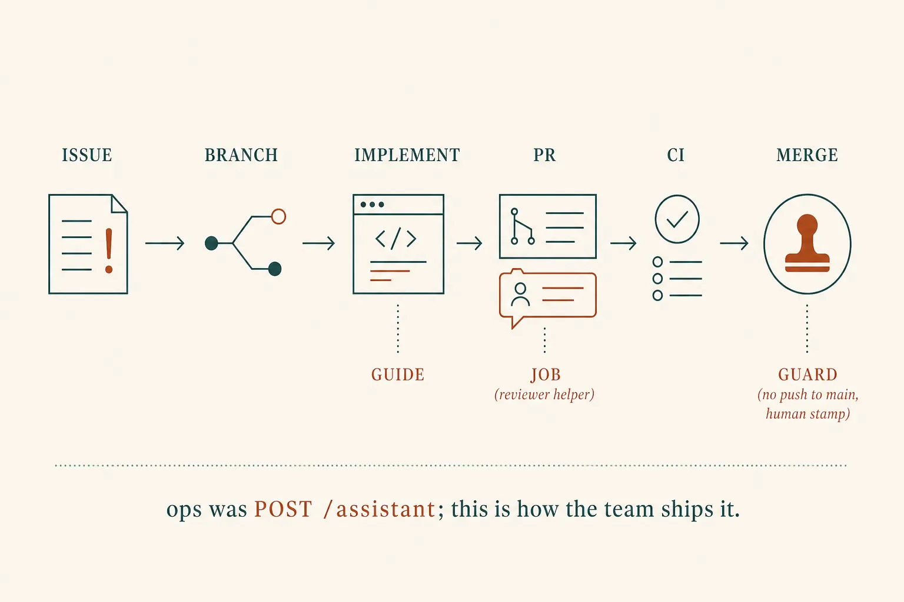
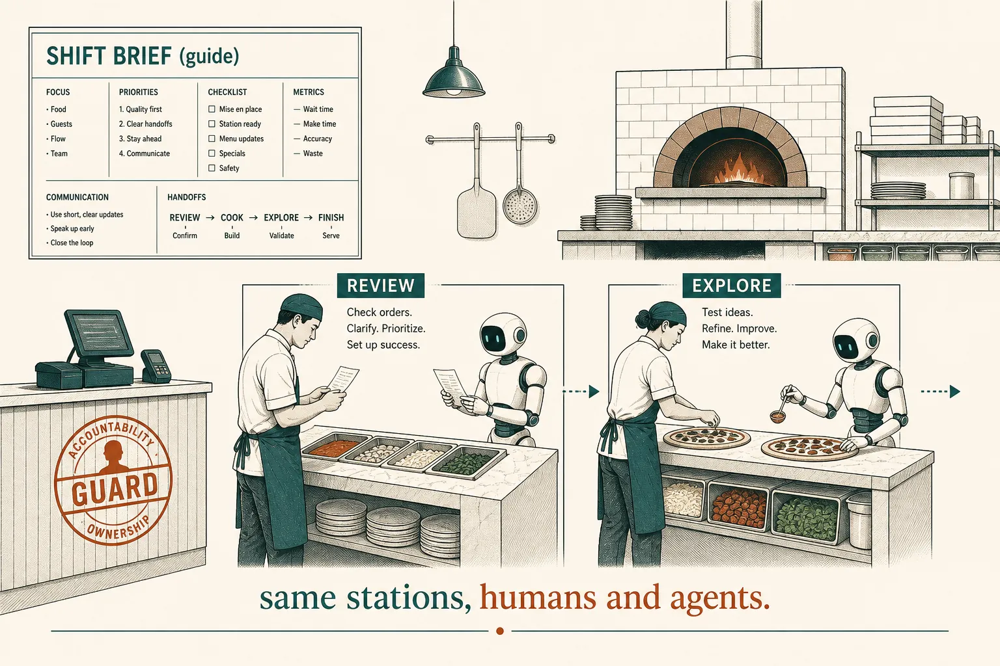

Development flow
Write the floor once
Lesson 0014 was ops: the assistant inside the product, graded on Stripe. Tonight is dev: you are the team lead. Developers and agents share one floor. Do not keep a wiki for people and a prompt for Cursor. Put guidelines, guardrails, and named jobs in the repo — the same files both read.
What this is. The team operating system as files: a guide (always-on brief), a guard (harness that can block), a job (skill or sub-agent anyone may dispatch). Anthropic: CLAUDE.md is what a new teammate would need, committed so the team shares it. Cursor: rules and .cursor/agents/ belong in git. Claude Code · CLAUDE.md · Cursor · Rules
What this is not. A new model. HR process theatre. Re-teaching skills, hooks, or isolate·brief·return — those cards still hold; tonight is who they are for. Plugins, org MDM, “agent teams” of many sessions — parked. Not a ChatGPT menu named “Team.”
- 1 · GuideText in git. Humans onboard on it; agents load it.
- 2 · GuardHooks, CI, CODEOWNERS, merge stamp. Can block.
- 3 · JobNamed helpers in git. Human or agent may call them.
You already have the three machines (0007, 0008, 0011). Tonight you aim them at the team.

Architecture first. Alignment is not a meeting. It is whether both parties read the same tree.
Ops was the product. This is how you ship it.
The full-stack map still holds. The request is no longer POST /assistant. It is a ticket: branch, implement, PR, CI, merge. The agent sits in implement and review — inside a harness you already named (allow · run · stop · show). The lead’s job is to make that harness the team’s, not each developer’s private prompt.

Guide on the work. Job on the review. Guard on the merge. CI is still an eval (0014) — tests are graders.
One billing team · three files
# GUIDE — AGENTS.md / CLAUDE.md / .cursor/rules
# What a new teammate needs. Commit it.
- npm test before a PR
- refunds: policy node before Stripe (0014)
- never push to main; never apply a migration without a stamp
# GUARD — .cursor/hooks.json (also CI + CODEOWNERS)
# Anthropic: if it must fire at a moment, a hook, not another sentence.
on git push origin main → deny
on migrate → pause for human # 12-factor: selection ≠ invocation
# JOB — .cursor/agents/reviewer.md (or .claude/agents/)
# Cursor: check this folder into git so the team benefits.
description: After a PR. Tests, secrets, policy-before-Stripe.
# Human: @reviewer
# Agent: Agent({ type: "reviewer", prompt: "diff vs main" })
# Return: eight lines. Human still merges.
What this shows. The Confluence page and the personal “ship fast” prompt were two floors. These three files are one. A guideline can be ignored; a hook cannot. A job is not a second model — it is a named helper with isolate · brief · return, now owned by the repo.

Kitchen optional. The wall is the guide, the stamp is the guard, the named stations are jobs. Same stations for cooks and helpers.
Skill: name the layer
Drift is two floors. Guide is one brief in git. Guard blocks. Job is a helper both callers use.
Four developers, one lead
You already own the machines
Guide ← skills / rules
Always-on brief, or a chapter on a match. Skills card. Cursor rules and CLAUDE.md are the same rent: persistent instructions, in git.
Guard ← harness
Allow, stop, stamp. Harness card. Hooks and CI are the box around every developer’s agent, not a speech in standup.
Job ← sub-agent
Clean window, short return. Sub-agents card. The new move is: the definition lives in the repo so the lead, the hire, and the agent share it.
Parked: plugins (how a folder arrives), org-wide MDM/managed CLAUDE.md, Cursor dashboard Team Rules vs repo rules, Claude “agent teams” of many sessions. Personal CLAUDE.local.md / user rules stay off git — taste, not the floor. Evals (0014) still grade the product; CI grades the branch.
Check
Primary source. CLAUDE.md (team-shared via git; what a new teammate needs; hooks when it must fire). Cursor: Rules / AGENTS.md (check into git); subagents (project folder in version control); hooks (observe / block). Gap between slip and run: 12-factor · Factor 8.
Card: team floor. Machines: harness · skills · sub-agents. Last gate: evals.